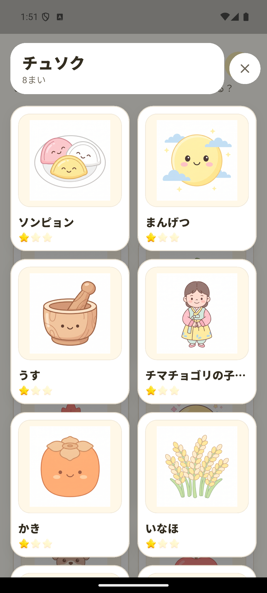
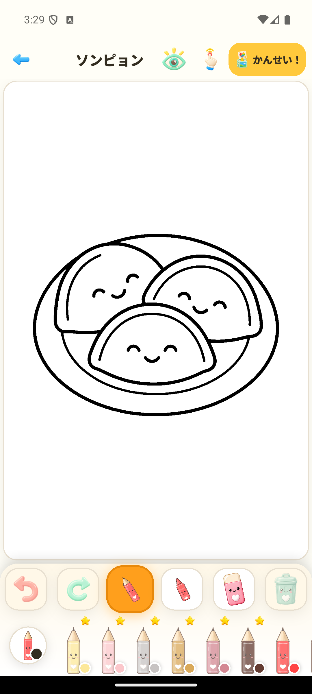
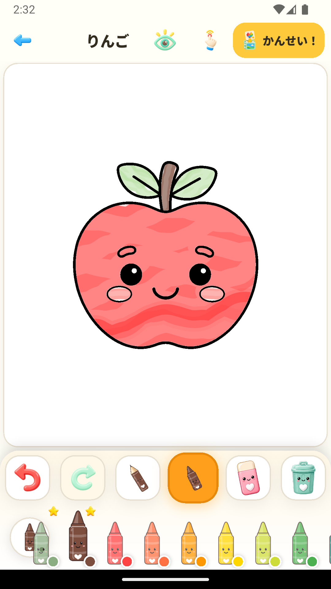

やさしい道具
えんぴつやクレヨン、太さの選択、消しゴム、元に戻す、やり直すが使えます。
大きなボタンとシンプルな流れで、絵と色に集中できます。アカウントも必要ありません。
えんぴつやクレヨン、太さの選択、消しゴム、元に戻す、やり直すが使えます。
キャンバスを拡大・移動し、ミニマップを見ながら小さな部分もぬれます。
「わたしの作品」に保存し、写真への書き出しや端末の共有機能を使えます。
好きな絵をえらび、自由に色をぬって、できあがった作品を残しましょう。


